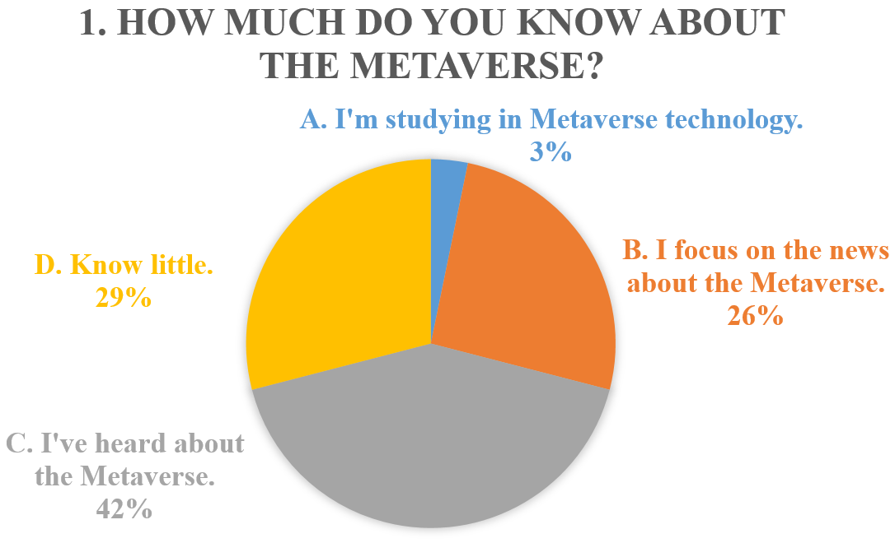
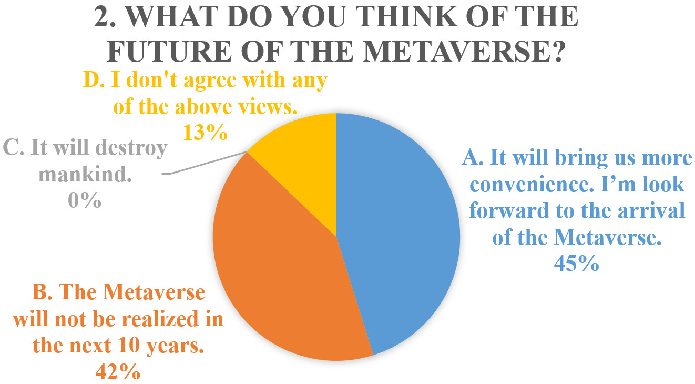
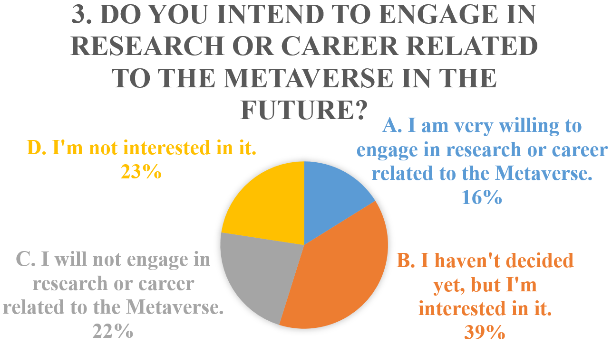
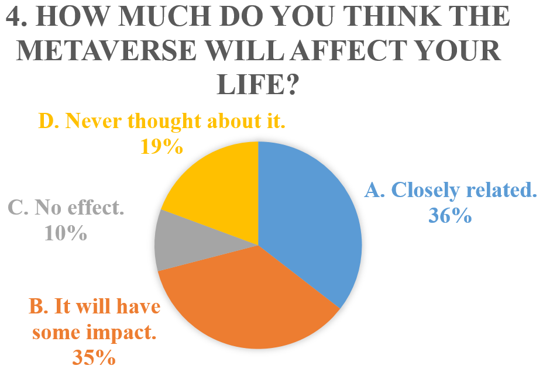
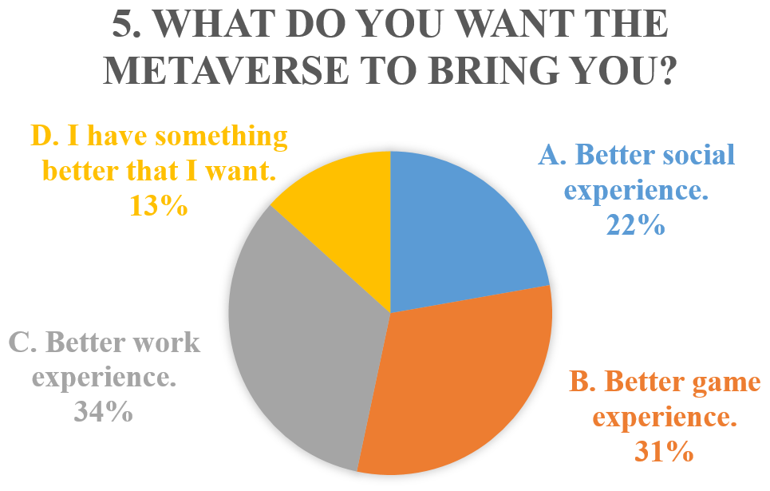

Thought About Future and
Results of the Questionaire.
Which field should I research? I love C language, I love its concise and pure. Java is OK, it has a lot of concepts to learn. But it is too rigid if I just remember its concepts like 21 design patterns. Learn behind the air. More theory but less practice.
Maybe I should do some LeetCode first, that I could summary from problems. And practice my thinking.
Language is less important actually. Do research or do technology. Research is hard to make achievement. Technology is better and suitable for me, I think.
So, if I choose technology. Ability to accumulate and summary knowledge is important.
I need to study hard right now.
Here is the results of the questionaire which is the homework of Professional English. 31 students filled the questionaire. I was thinking all questions to be single choice. But there are 7 students make multiple choice in question 5, whom chosen A,B,C all in same.
All in all, it's a very intersting experience, especially when you put forward the questions and get a great feedback.






Update Record:
2021-12-22 16:30 | write something.
2021-12-22 19:07 | supplement something.
Click the blue bar at the top of the page to return Home.